Tableau de Bord
---------------
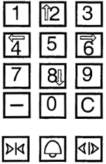
---------------
Accés au menu Paramétrage
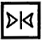 |
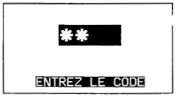
---------------
Menu Paramétrage
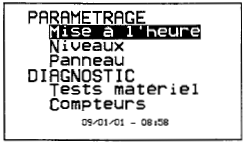
---------------
Sous menu panneau
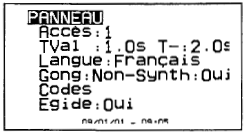
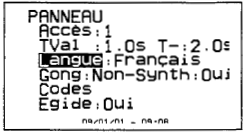
---------------
Paramètre:Accès
* 1 Pour l'accès principal
* 1bis Pour le 2ème tableau de bord de l'accès principal
* 2 Pour l'accès secondaire
* 2bis Pour le 2ème tableau de bord de l'accès secondaire
-----
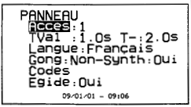
---------------
Paramètre:Temps de Validation et Temps
Temps de validation:
-----
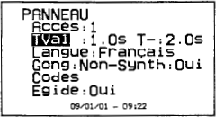
---------------
Temps - :
-----
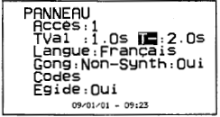
---------------
Paramètre:Gong et Synthèse
Ces paramètre permettent ,si nécessaire,d'adapter le type
-----
|
| |
Cette action permet de valider,modifier et
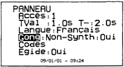
---------------
|
| |
Cette action permet de valider,modifier et
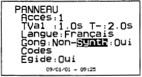
---------------
Paramètre Codes
Ce paramètre permet si besoin
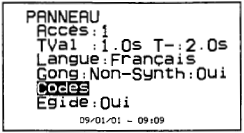
---------------
|
| |
Retour à l'écran principal
---------------
Sortir de la fonction paramètrage

Fonction PRIC : Cabine "Seul"
Saisir à l'aide des touches
Si aucune action n'est faite avant 10 sec
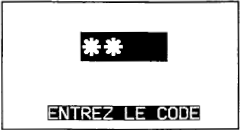
---------------
Sélectionner la durée souhaitée en appuyant
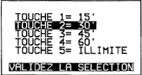
Pour sortir de cette fonction
---------------
Pour retour en mode normal
Saisir à l'aide des touches